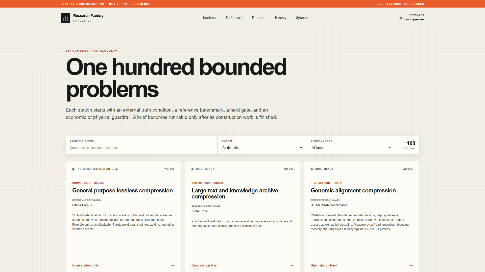
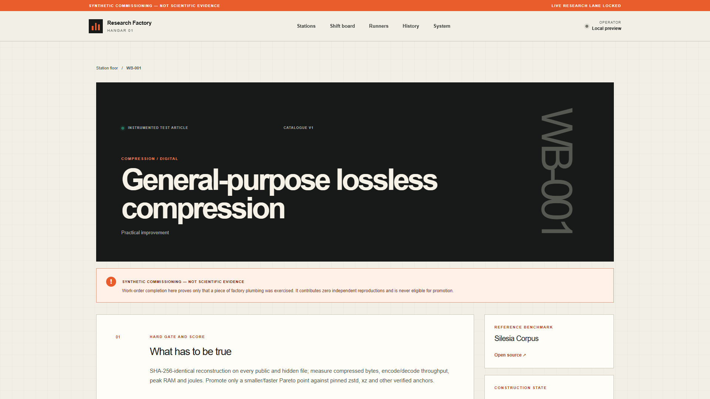
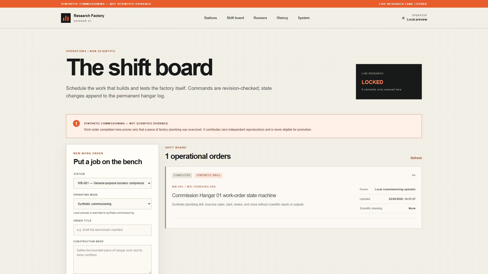
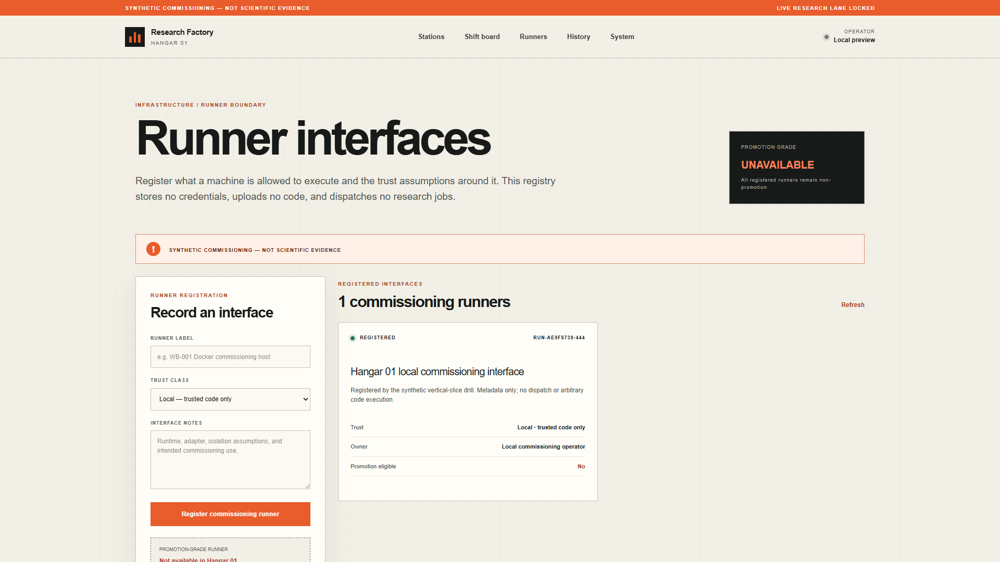
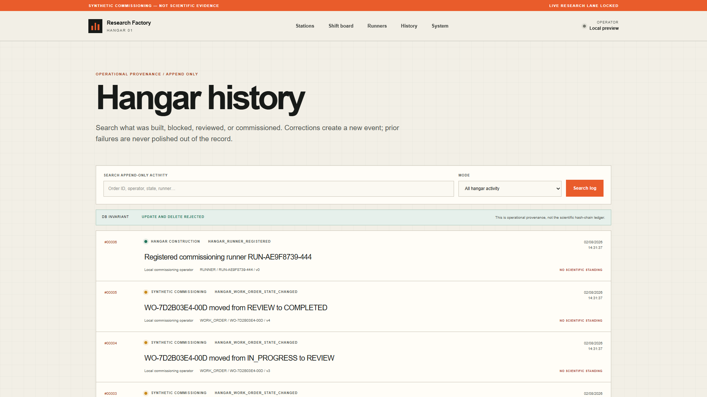
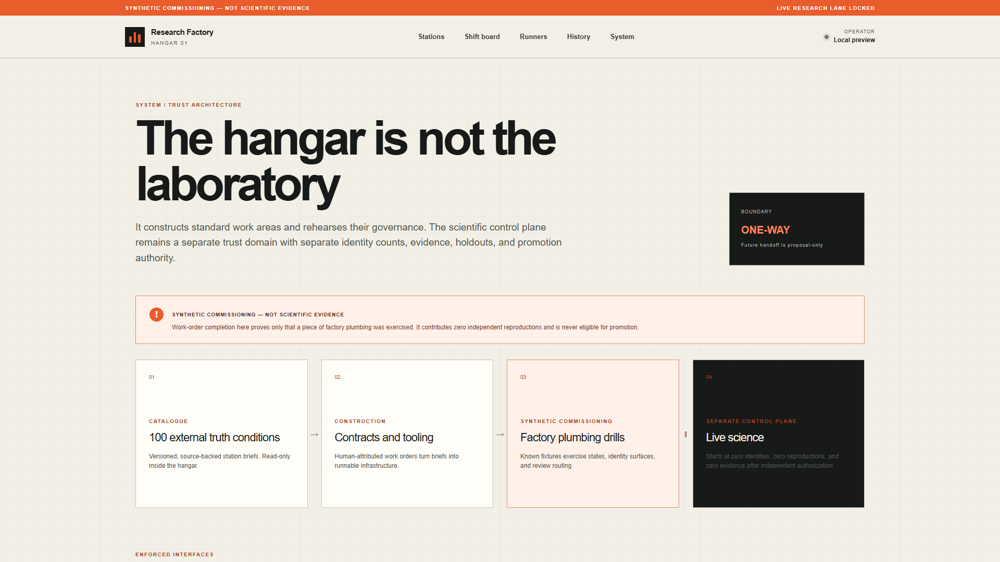
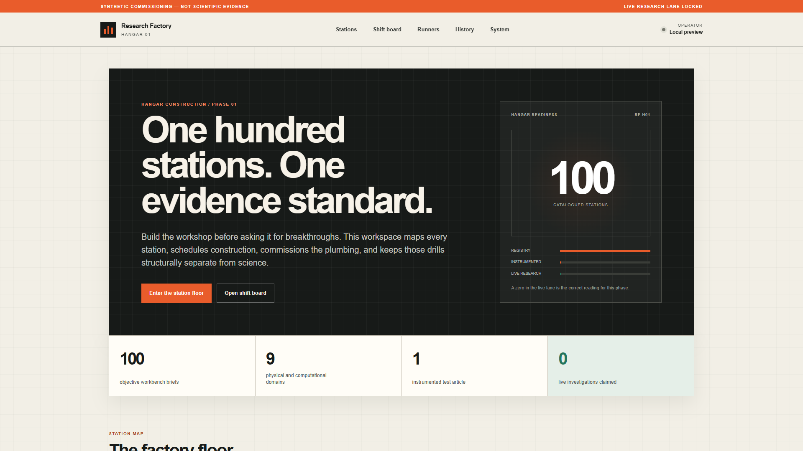

An agent can produce a polished claim before anyone has defined what would make it true.
Start with gates the claim cannot negotiate after the fact.

Choose the problem by its external truth condition and hard gate.

If it cannot clear the frozen measurements, it remains a recorded attempt.

The station, mode, task, and done condition are fixed before progress begins.
No arbitrary status editing. A stale command cannot quietly rewrite the shift.

Its permissions and trust assumptions are part of the record.

Corrections append a new event. Earlier failures are never polished out.

It proves the factory plumbing worked. Nothing more.

Discipline does not promise an instant breakthrough. It makes genuine progress legible—and harder to fake.